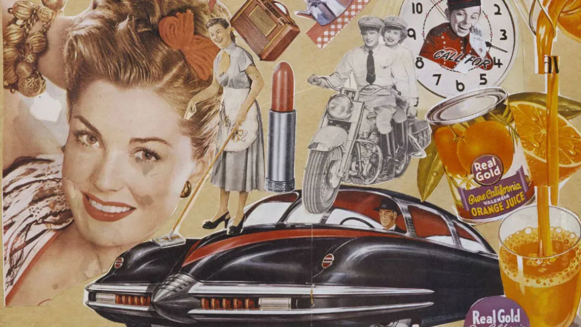
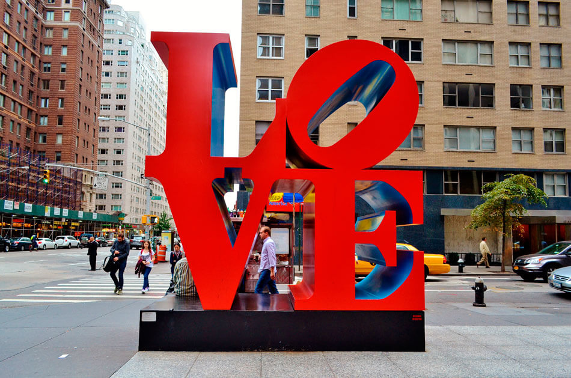
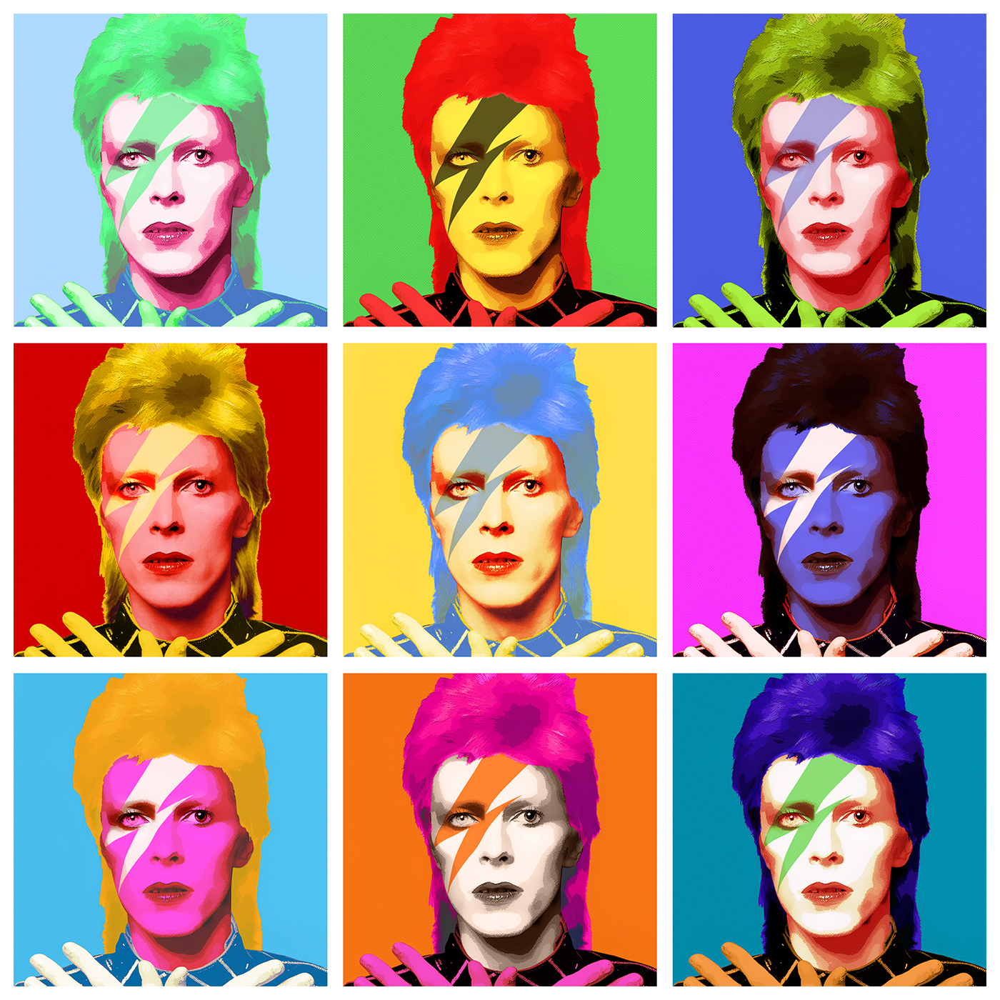
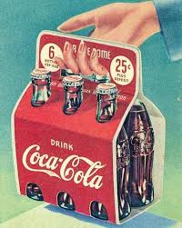
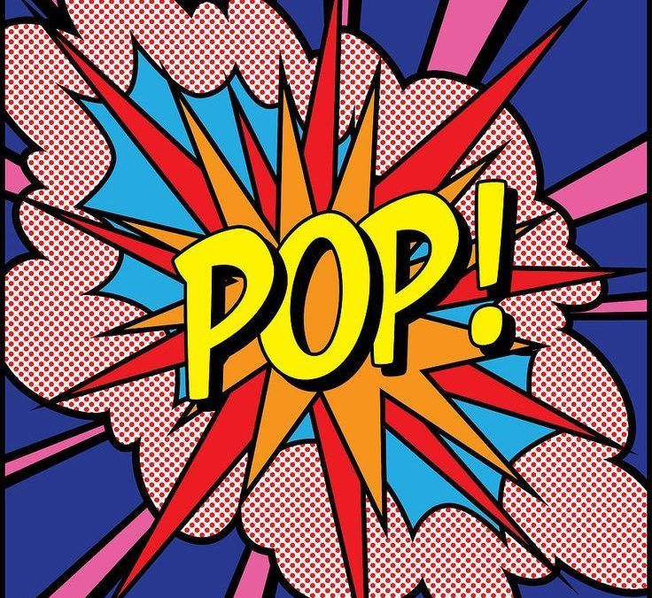
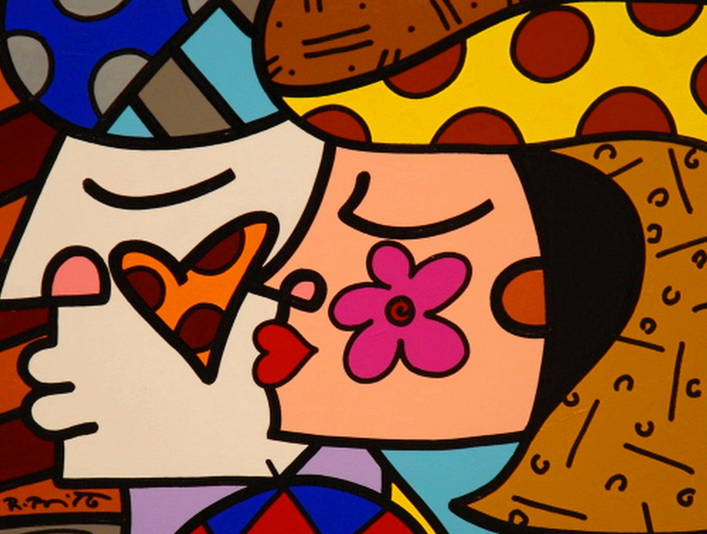

Lawrence Alloway utiliza el término Pop Art para describir un arte inspirado en la cultura popular, la publicidad y el consumo.

Andy Warhol, Roy Lichtenstein y otros artistas comienzan a mezclar arte, cómic, celebridades y objetos cotidianos.

El Pop Art se vuelve dominante y comienza a ser reconocido por museos, galerías, medios y la cultura visual internacional.

El movimiento se expande fuera de Estados Unidos e influye en el diseño gráfico, la moda, la música y la publicidad.

El movimiento pierde fuerza como corriente organizada, pero sus recursos visuales siguen influyendo en artistas posteriores.

El Pop Art sigue presente en el diseño, la publicidad, la moda, la música, las redes sociales y el arte contemporáneo.
El Pop Art revolucionó la relación entre arte y comercio, acercó la cultura popular a los museos y cambió la forma en que vemos el consumo, las imágenes y la comunicación visual.